实用技术|十分钟搞定哑铃图——R实现与论文复盘
收录于合集
#数据可视化 15 个
#实用技术 19 个
2019年，一篇发在《自然》（Science）上的论文刷爆了中国网民的朋友圈。来自美国和瑞士的学者宣称，他们通过“丢钱包”的实地实验考察了全球数十个国家的民众诚信情况。数据表明，无论捡到的钱包里是否有钱，都极少有中国民众会主动联系失主，这反映中国民众的诚信情况在全球各国排名垫底。正如很多学者已经指出的那样，这篇文章的研究设计有很大的问题。特别是，他们在钱包中留下了失主姓名和电子邮件地址，这完全不符合中国普通民众的通讯习惯。在此，我们不再重复对这篇文章价值立场的批评。
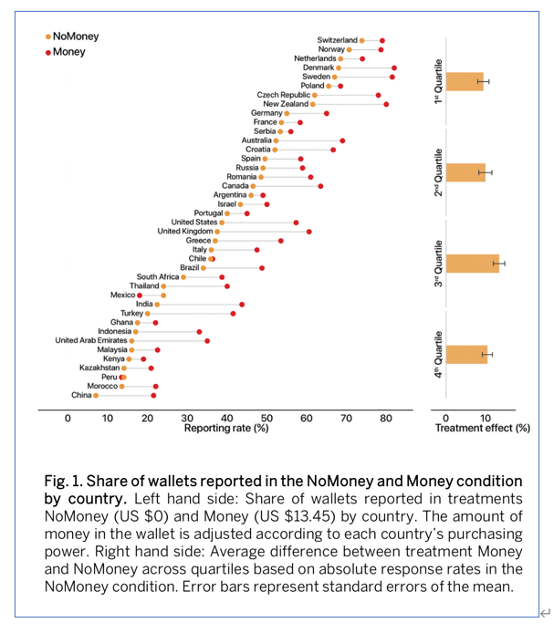
我们的关注点是，这篇文章使用了一种非常直观的可视化方法——哑铃图（Dumbbell Plot），这在很大程度上推动了文章的广泛传播。事实上，哑铃图只是用直线连接了两组常规的点图，但却实现非常传神的数据表现效果。首先，阶梯状的排序清晰地展示了不同国家之间的差异。其次，两组数据点颜色和位置又直观刻画了变量在各国内部的关系。最后，连线显著减轻了读者在坐标系中匹配两个变量的视觉负担。
那么如何实现这种人见人爱的哑铃图呢？本文将为您逐步揭晓。
首先我们先根据文章末尾的提示找到原作者公开的资料。按要求填一下申请信息就可以下载数据和代码了。“behavior data”记录了“丢钱包”的详细数据。可以看到，原作者是Stata选手，而且已经贴心地给出了do文件。因此，我们就不重复Stata操作了，直接进入万物皆可R的环节（需要tidyverse包集群）。
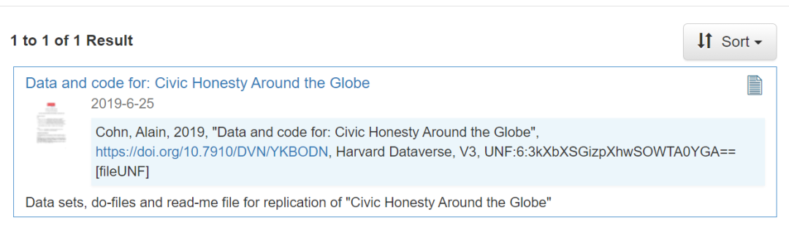 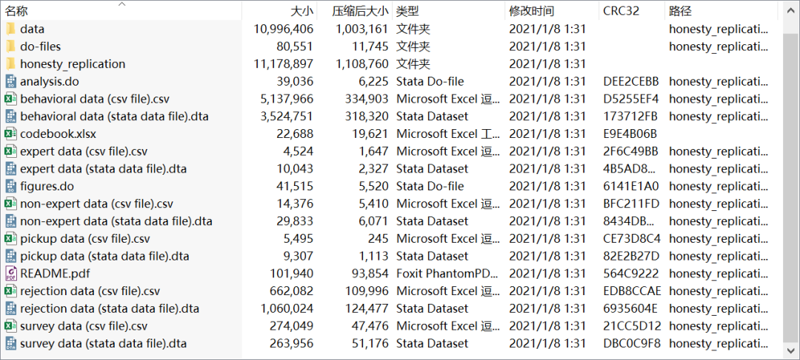
作者给出的数据记录了每一次“丢钱包”的时间地点和结果，我们重点关注三个变量：国家Country、情形cond（放钱=1）、应答response（联系失主=100）。
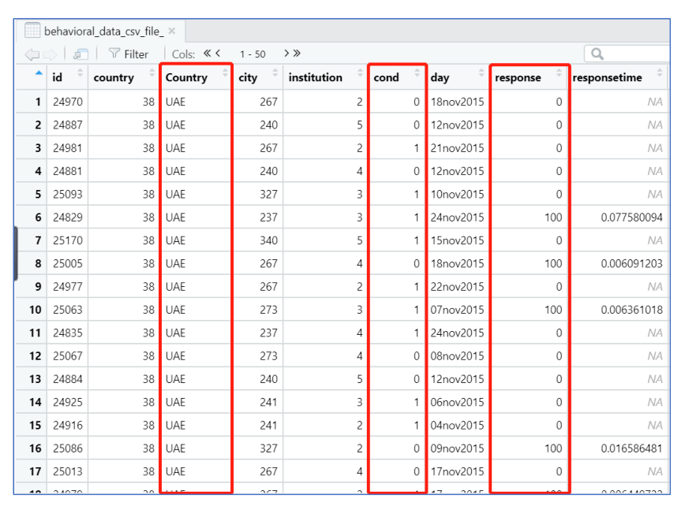
方便起见，我们直接丢掉不关心的变量和样本。清洗后，我们需要将cond拆成两个变量然后将数据汇总到国家层面。这里有很多的简便方法和辅助工具，但我们仍然展示最基本的操作过程：
behavioral_data_csv_file_ <- read_csv("behavioral data (csv file).csv")test <- select(behavioral_data_csv_file_, Country, cond, response) %>% filter(cond < 2)test0 <- filter(test, cond == 0) %>% group_by(Country) %>% summarise(re0 = mean(response))test1 <- filter(test, cond == 1) %>% group_by(Country) %>% summarise(re1 = mean(response))test01 <- left_join(test0,test1)
现在我们已经得到了可以用来画图的汇总数据了。其中的变量分别为国家Country，钱包不放钱的应答率re0，钱包放钱的re1。
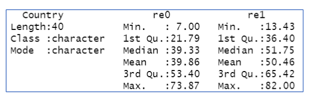
下面介绍最简单粗暴的一种作图方式，直接加载ggplot2的增强包ggalt（tidyverse不包含，需额外安装），此时以geom开头的几何层作图语法就多出了geom_dumbbell的选项。根据geom_dumbbell的逻辑，我们需要先根据一个连续变量和一个分类变量建立坐标系，然后再在坐标系中延伸出另一个连续变量。在我们的数据中，y理所当然的就是国家名。x则需要从re0和re1中选一个，这就是哑铃连线的起点，然后我们再把另一个变量定义给xend，这就是哑铃连线的终点。下面就是最基本的代码和惨不忍睹的第一张图。
library(ggalt)ggplot(test01,aes( y = Country,x = re0, xend = re1)) + geom_dumbbell()
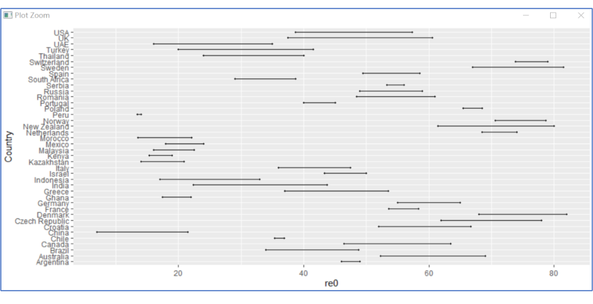
下面开始调整图形。首先，我们要将国家有序排列，这就需要在ggplot的aes美学层命令中嵌入reorder函数。其次，我们需要用颜色将re0和re1分开。最后，我们希望哑铃能更饱满一些，然后希望背景不要喧宾夺主。
ggplot(test01,aes( y = reorder(Country, re0),x = re0, xend = re1)) +geom_dumbbell(size_x=2.5, size_xend = 2.5, colour_x="orange",colour_xend = "red") +theme_classic() + xlab("") +ylab("")
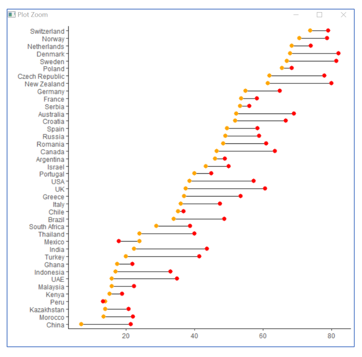
现在看起来是不是舒服、清晰了很多？下面我们不妨进一步思考，哑铃图无非是点图和线图的组合，我们能不能只用最基本的ggplot命令来实现呢？答案是肯定的，而且在最基本的ggplot命令中，我们可以更加方便地批量化调整颜色、形状等属性。
下面贴出一种思路供大家参考：
test0101 <- arrange(test01, re0)test0101$o <- 1:40test0101 <- gather(test0101, key= cond, value = re, -c("Country","o"))ggplot(test0101, aes(y = reorder(Country,o), x = re, colour = cond, shape = cond )) +geom_line(aes(group = Country), colour = "black" ) +geom_point(size = 2.5) + theme_classic() + xlab("") +ylab("")
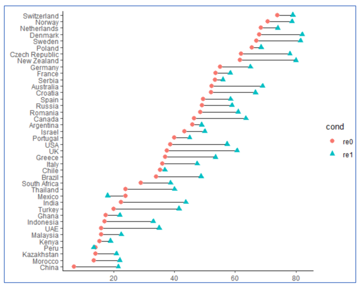
最后，我们再看一个新的例子，读者可以自行从下面的思路和代码中体会细节。在《精英与大众双重视角下的当代欧洲民粹主义》一文中，作者希望描述欧洲各国民众对于移民的负面情绪。作者的数据中包括国家Cname，第四波调查结果immisum4，第五波调查结果immisum5，还有已经提前算好的国家排序X。
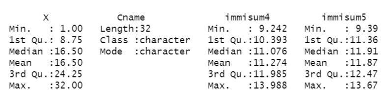
下面贴出同样提出两种实现哑铃图的代码和效果。
首先是ggalt选手：
e2 <- read_csv("e2.csv")ggplot(e2,aes(y = reorder(Cname, X), x = immisum4, xend = immisum5)) +geom_dumbbell(size_x=3.5, size_xend = 3.5, colour_x="skyblue",colour_xend = "red") +theme_bw() + xlab("") +ylab("") + coord_flip() +theme(axis.text=element_text(angle = 90, colour = "black")) +theme(axis.text.y=element_text(size=0))
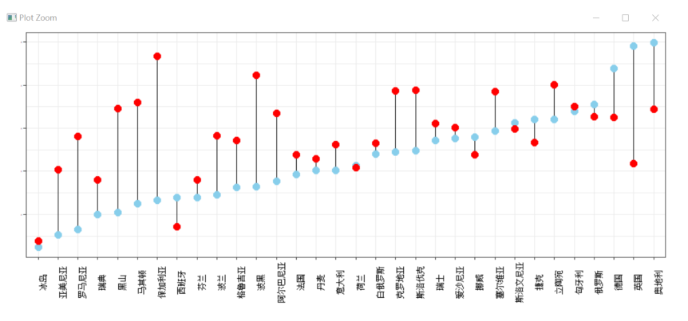
然后是最基本的ggplot命令：
e3 <- gather(e2, key = colour, value = immi, -c("X","Cname")) ggplot(e3,aes(x = reorder(Cname,X), y = immi, colour = colour, shape = colour))+ geom_line(aes(group = Cname),colour = "black" ) + geom_point(size = 3.3)+ theme_bw()+xlab("") +ylab("")+ theme(axis.text.y=element_text(size=0)) + theme(legend.position="none")+ theme(axis.text=element_text(angle = 90, colour = "black"))
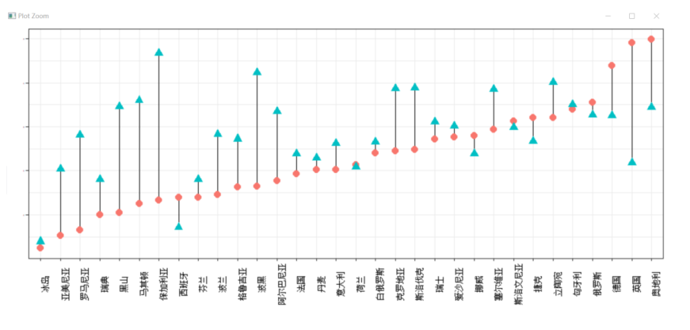
我们将本文的代码和相关数据打包上传到了网盘，感兴趣的读者朋友可以扫描下面二维码下载复验。 ****
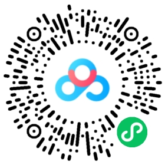
参考文献：
1. A. Cohn, et al., “Civic Honesty around the Globe,” Science , Vol. 365, No. 6448, 2019, pp. 70-73.
2. 陆屹洲、马得勇：《精英与大众双重视角下的当代欧洲民粹主义》，《中央社会主义学院学报》，2020年第6期，第47-60页。
撰文：陆屹洲 审读：杨端程 编辑：张天一